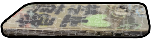
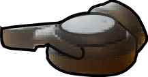

Making this site responsive is taking some time. In the meantime, check it out on a desktop and make sure the browser window is wide enough.
Thanks!
instagram
+
email
IN SEARCH OF
FEMINISM AND IDENTITY
IN ASIA
Information
In Search of Feminism and Identity in Asia

